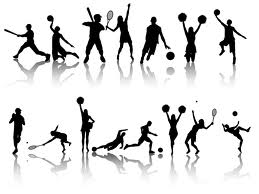
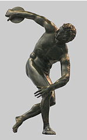

Sports Euphoria
Sports EuphoriaSport
 Sport (or, primarily in North America, sports) is all forms of competitivephysical activity which, through casual or organised participation, aim to use, maintain or improve physical ability and provide entertainment to participants. Hundreds of sports exist, from those requiring only two participants, through to those with hundreds of simultaneous participants, either in teams or competing as individuals. Sport is generally recognised as activities which are based in physicalathleticism or physical dexterity, with the largest major competitions such as the Olympic Games admitting only sports meeting this definition, and other organisations such as the Council of Europe using definitions precluding activities without a physical element from classification as sports.[ However, a number of competitive, but non-physical, activities claim recognition as mind sports. The International Olympic Committee (through ARISF) recognises bothchess and bridge as bona fide sports, and SportAccord, the international sports federation association, recognises five non-physical sports, although limits the amount of mind games which can be admitted as sports Sports are usually governed by a set of rules or customs, which serve to ensure fair competition, and allow consistent adjudication of the winner. Winning can be determined by physical events such as scoring goals or crossing a line first, or by the determination of judges who are scoring elements of the sporting performance, including objective or subjective measures such as technical performance or artistic impression. In organised sport, records of performance are often kept, and for popular sports, this information may be widely announced or reported in sport news. In addition, sport is a major source of entertainment for non-participants, with spectator sports drawing large crowds to venues, and reaching wider audiences through sports broadcasting.
Definition
The precise definition of what separates a sport from other leisure activities varies between sources, with no universally agreed definition. The closest to an international agreement on a definition is provided by SportAccord, which is the association for all the largest international sports federations (including association football, athletics, cycling, tennis, equestrian sportsand more), and is therefore the de facto representative of international sport. They also recognise that sport can be primarily physical (such as rugby or athletics), primarily mind (such as chess or go), predominantly motorised (such as Formula 1 or powerboating), primarily co-ordination (such as billiard sports) or primarily animal supported (such as equestrian sport). There has been an increase in the application of the term 'sport' to a wider set of non-physical challenges such as electronic sports, especially due to the large scale of participation and organised competition, but these are not widely recognised by mainstream sports organisations.
Competition
There are opposing views on the necessity of competition as a defining element of a sport, with almost all professional sport involving competition, and governing bodies requiring competition as a prerequisite of recognition by the IOC or SportAccord. Other bodies advocate widening the definition of sport to include all physical activity. For instance, the Council of Europe include all forms of physical exercise, including those completed just for fun. In order to widen participation, and reduce the impact of losing on less able participants, there has been an introduction of non-competitive physical activity to traditionally competitive events such as school sports days, although moves like this are often controversial. History There are artifacts and structures that suggest that the Chinese engaged in sporting activities as early as2000 BC. Gymnastics appears to have been a popular sport in China's ancient past. Monuments to the Pharaohs indicate that a number of sports, including swimming and fishing, were well-developed and regulated several thousands of years ago in ancient Egypt.[ Other Egyptian sports included javelin throwing, high jump, and wrestling. Ancient Persian sports such as the traditional Iranian martial art ofZourkhaneh had a close connection to the warfare skills. Among other sports that originate in ancientPersia are polo and jousting.  A wide range of sports were already established by the time ofAncient Greece and the military culture and the development of sports in Greece influenced one another considerably. Sports became such a prominent part of their culture that the Greeks created the Olympic Games, which in ancient times were held every four years in a small village in the Peloponnesus calledOlympia. Sports have been increasingly organised and regulated from the time of the ancient Olympics up to the present century. Industrialisation has brought increased leisure time to the citizens of developed and developing countries, leading to more time for citizens to attend and follow spectator sports, greater participation in athletic activities, and increased accessibility. These trends continued with the advent of mass media and global communication. Professionalism became prevalent, further adding to the increase in sport's popularity, as sports fans began following the exploits of professional athletes through radio, television, and the internet — all while enjoying the exercise and competition associated with amateur participation in sports.
Youth participation
Youth sports present children with opportunities for fun, socialization, forming peer relationships, physical fitness, and athletic scholarships. Activists for education and the war on drugs encourage youth sports as a means to increase educational participation and to fight the illegal drug trade. According to the Center for Injury Research and Policy at Nationwide Children’s Hospital, the biggest risk for youth sports is death or serious injury including concussion, with the highest risk coming from running, basketball, football, volleyball, soccer, and gymnastics
Spectator involvement
The competition element of sport, along with the aesthetic appeal of some sports, result in the popularity of people attending to watch sport being played. This has led to the specific phenomenon of spectator sport. Both amateur and professional sports attract spectators, both in person at the sport venue, and through broadcast mediums including radio, television and internet broadcast. Both attendance in person and viewing remotely can incur a sometimes substantial charge, such as an entrance ticket, or pay-per-view television broadcast. It is common for popular sports to attract large broadcast audiences, leading to rival broadcasters bidding large amounts of money for the rights to show certain fixtures. The football World Cup attracts a global television audience of hundreds of millions; the 2006 final alone attracted an estimated worldwide audience of well over 700 million and the 2007 Cricket World Cup attracted about 2.3 Billion worldwide viewers. In the United States, the championship game of the NFL, the Super Bowl, has become one of the most watched television broadcasts of the year. Super Bowl Sunday is a de facto national holiday in America; the viewership being so great that in 2007 advertising space was reported as being sold at $2.6m for a 30 second slot